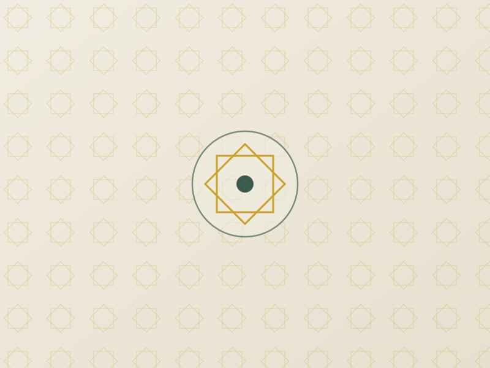
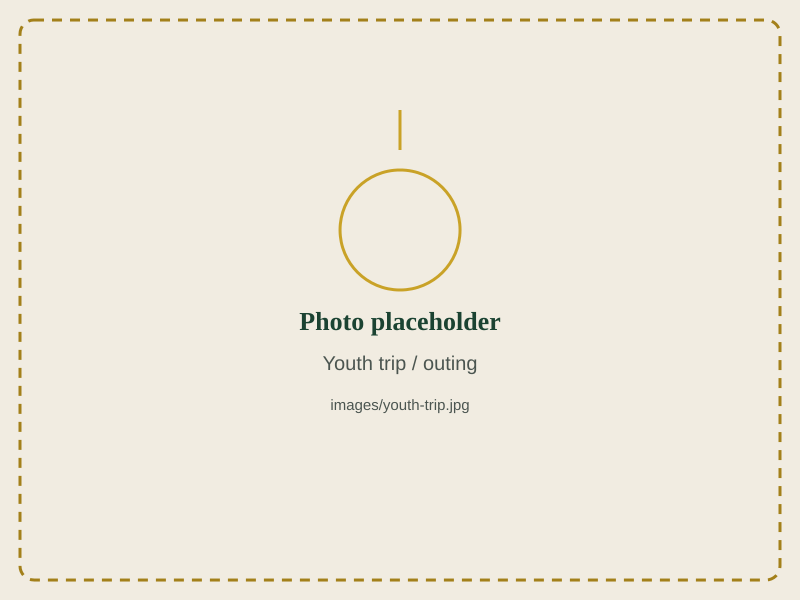

Youth Activities
Helping young people in North Wales grow in confidence, character, and faith — through sport, friendship, leadership, and adventure.
For Every Young Person

Sports
Regular football, games, and fitness sessions that build teamwork and healthy habits.
Social Evenings
Games nights, talks, and get-togethers where young people can relax, connect, and ask big questions in a safe space.
Leadership & Volunteering
Opportunities to help run events, mentor younger children in the madrasa, and develop real responsibility within the community.

Trips & Outings
Day trips and outings throughout the year — a chance to build friendships beyond the four walls of the centre.
Ages, Times & Safeguarding
If you'd like your child to take part, or you're a young person who'd like to get involved, please get in touch.
Get Your Young Person Involved
New faces are always welcome — come along to a session, or contact us to find out more.
Contact Us About Youth Activities